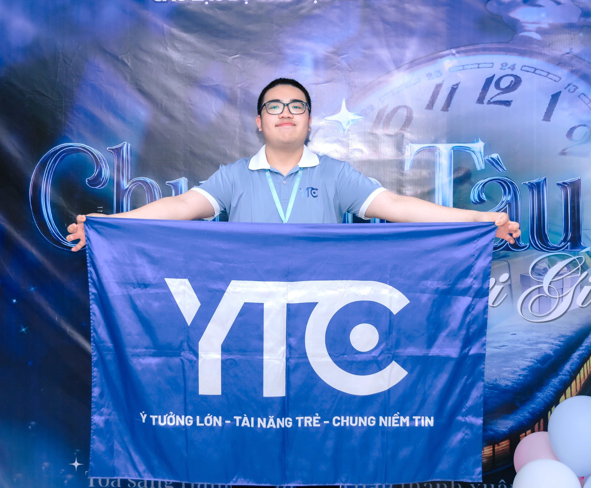

Tổng quan về Wiki • Trang web thông tin & nội dung hữu ích về CLB Đào Tạo Kỹ Năng Trẻ (YTC) - UNETI
Wiki của Young Training Club là gì, được xây dựng bởi ai và hướng đến điều gì
Young Training Club Wiki là trang web chứa thông tin, nội dung hữu ích về CLB Young Training Club (CLB Đào Tạo Kỹ Năng Trẻ - UNETI), được phát triển bởi Trần Đặng Bình Minh - thành viên Ban Kỹ thuật - Vận hành. Wiki ghi lại chân thực nhất hình ảnh con người, hoạt động, thành tựu và những câu chuyện của CLB qua từng thế hệ, giúp mọi thành viên - cũ và mới - cùng tìm hiểu, kết nối và tự hào về YTC.
Trang web wiki chính thức của CLB Young Training Club
Trần Đặng Bình Minh - Ban Kỹ thuật - Vận hành
CLB Đào Tạo Kỹ Năng Trẻ - UNETI
Lưu giữ, chia sẻ kiến thức & câu chuyện của các thế hệ YTC-er
Những người trực tiếp quản trị, biên soạn và phát triển nội dung Wiki

DHTI18A1CL
Ban Kỹ thuật - Vận hành Xem hồ sơDHTI18A1CL
Ban Truyền thông Xem hồ sơDHMK18A1HN
Chủ Nhiệm CLB Xem hồ sơBạn muốn đóng góp nội dung cho Wiki? Hãy liên hệ với đội ngũ Admin qua các hồ sơ thành viên ở trên. Mọi đóng góp về tư liệu, hình ảnh, câu chuyện của các thế hệ YTC-er đều được trân trọng để Wiki ngày càng đầy đủ hơn.
Bản đồ nội dung Wiki - mỗi khu vực là một hành trình khám phá về Young Training Club
Cổng thông tin tổng hợp của CLB: công bố thành viên thế hệ mới "THE KEY IS YOU", hoạt động chính, kết quả cuộc thi gần đây, sự kiện nổi bật và gương mặt Sinh viên tiêu biểu UNETI.
Xem trang chủSứ mệnh & giá trị cốt lõi, lịch sử hình thành từ tiền thân "CLB Yêu Tài Chính" (2012), các phiên bản logo, thành tựu tiêu biểu, tầm nhìn phát triển và mạng lưới liên kết Tổ Đội - CLB.
Xem trang giới thiệuChuỗi cuộc thi Podcast & Phim ngắn, cuộc thi MC - Giọng nói toàn trường và dấu ấn YTC tại các cuộc thi Đoàn - Hội & ngoài trường; kèm công cụ tìm kiếm và bộ lọc danh mục tiện lợi.
Xem các cuộc thiNhật ký hoạt động YTC: dã ngoại - teambuilding, sinh nhật CLB qua các dấu mốc tuổi, các chương trình - sự kiện và những khoảnh khắc đáng nhớ của các thế hệ YTC-er.
Xem nhật kýCơ cấu tổ chức & thành viên qua các thế hệ: Ban Thường trực Chủ nhiệm và 4 Ban Chuyên Môn, cùng giáo viên hướng dẫn đồng hành cùng CLB.
Tất tần tật về đợt tuyển thành viên mới nhất "THE KEY IS YOU - Gen 15.1": timeline từ mở đơn đến công bố kết quả, giới thiệu 4 Ban Chuyên Môn để bạn tìm đúng hướng đi, cùng mục Q&A giải đáp mọi thắc mắc trên hành trình trở thành YTC-er chính thức.
Xem thông tin tuyển thành viênCác huy hiệu (badge) ghi nhận đóng góp, thành tích và dấu ấn cá nhân - hiển thị ngay đầu trang hồ sơ của mỗi thành viên
Thành viên đam mê gắn bó với YTC lâu dài.
Thành viên được nhà trường vinh danh Sinh viên tiêu biểu UNETI.
Thầy cô đang giữ các chức vụ trong nhà trường phụ trách và hỗ trợ CLB.
Gương mặt dẫn các chương trình của UNETI.
Thành viên YTC là đối tác, đồng hành của các doanh nghiệp.
Thành viên góp mặt trong các tiết mục văn nghệ có màn trình diễn xuất sắc.
Huy hiệu được gán cho thành viên nào? Hãy ghé thăm trang Thành viên và mở trang hồ sơ cá nhân của từng YTC-er - các huy hiệu hiển thị ngay đầu trang hồ sơ, cạnh chức vụ hiện tại của thành viên.